俯视图：
俯视图： 完成了 TASK 1 到 6，下面按照任务顺序进行说明。本说明提供 md 和 html 两个版本， 内容相同，但 md 版本无法流畅预览视频，所以推荐用 html 版本阅读。
html 版在 html/ 目录下。不要直接双击 index.html——浏览器对 file:// 页面加载本地视频有安全限制，图片能正常显示、但视频会被拦掉，所以要借一个小型 本地服务打开。
html/双击我打开网页.batbash 双击我打开网页.shCtrl-C 停止服务cd html
python3 serve.py # Windows 上是 python serve.py注：如果无法正常看到视频，检查网络并重新打开网页
项目采用 Ubuntu 22.04 配合 gazebo classic 进行开发
sudo apt update && sudo apt install -y gazebo libgazebo-dev ros-humble-gazebo-ros-pkgs ros-humble-gazebo-ros 2-control查看命令
ros 2 topic list 查看所有话题
ros 2 topic info -v 具体话题查看话题具体信息
ros 2 interface show 接口 查看接口信息(方便后续通过话题通信进行进一步访问与修改操作)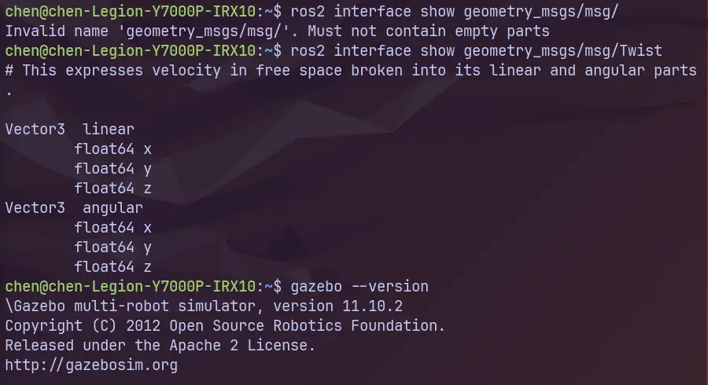
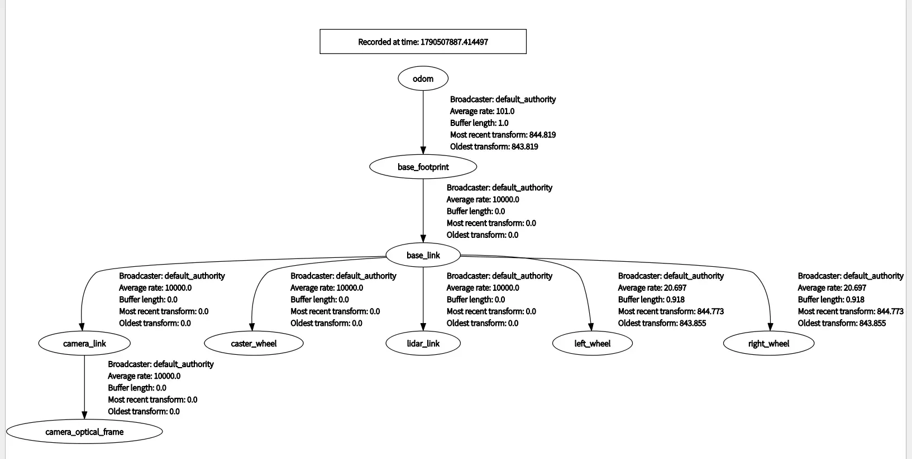
机器人未做修改，对机器人所处环境进行了修改。 斜视图： 俯视图：
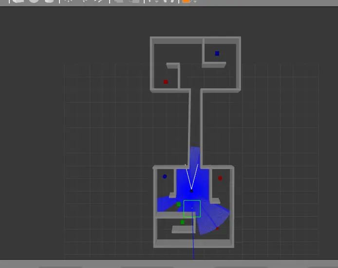
通过对项目进行整体查看，根据后续任务要求设计环境 1. 根据 TASK 5 的要求，机器人需要在位置环境中自主移动避障，所以我设计了小房间，并扩宽了初始面积，以提供充足的未知区域。 2. 根据 TASK 6 的要求，机器人需要识别场景的红绿蓝小方块，所以我设计了总共六个小方块，三种颜色，三种形状。 3. 根据 TASK 7 的要求，机器人最好通过一段较窄区域，所以我设计了一段长连廊(不过这个设计在后续暴露出了许多问题)。 4. 单个房间的尺寸和连廊长度接近 6 m 约为激光扫描范围 3.5 m 的 1.7 倍，在这个尺寸下，很容易暴露出里程计漂移的问题，为后续调参提供了需求基础 
src/recruit_robot_sim/worlds/room/World 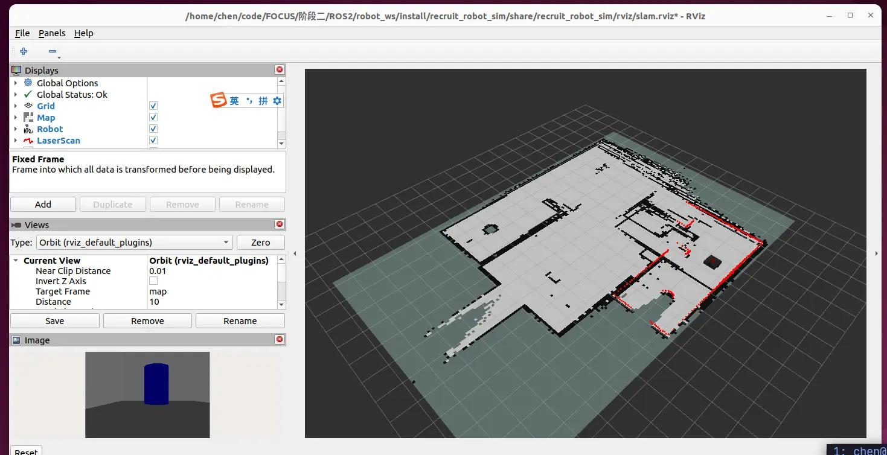
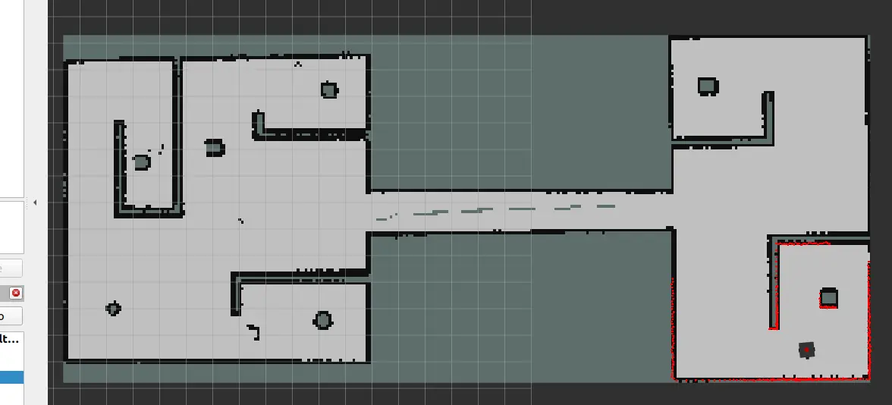
关闭回环检测后，建图完好 修正方式:重新构建一份地图，修改几何体的摆放位置，从而避免这个问题，或者通过关闭回环检测，操作，避免由于重复性的几何特征干扰检测。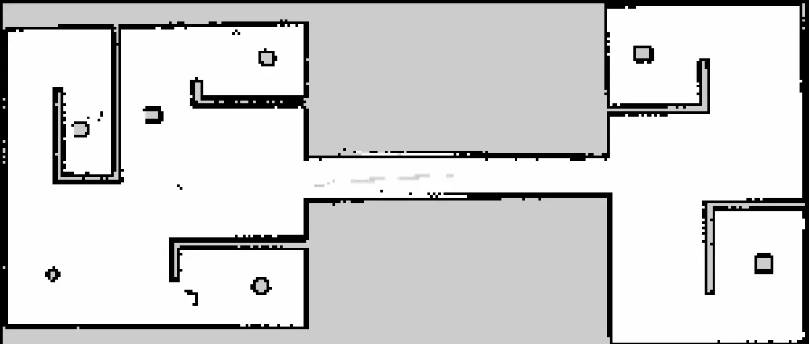
但是这种情况下载重复通过这个连廊时会出现较大问题，所以在 TASK 4 中开启这个回环检测并进行参数修正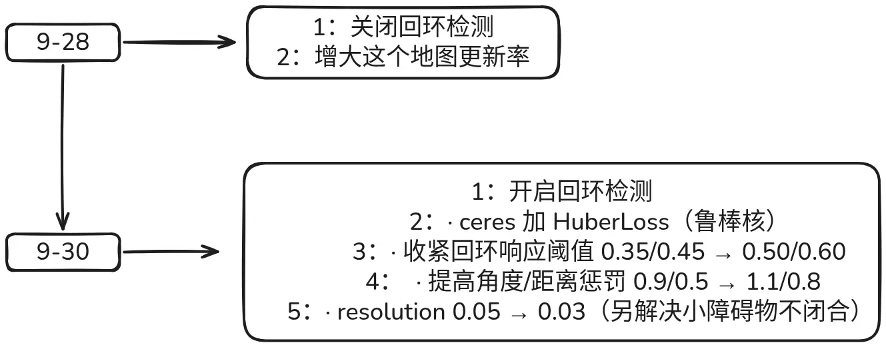
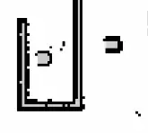
关注到有些小障碍物建图不清晰，没有完成完全的闭环，这个推测可以提高地图分辨率进行解决 resolution: 0.05 → 0.03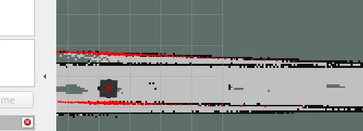
推测由于未开启回环检测，导致通过重复区域不能使地图对齐 do_loop_closing: false → trueloop_match_minimum_response_coarse: 0.35 → 0.50、fine: 0.45 → 0.60 前一个是初步匹配，后一个是精细匹配，结果，我讲达成回环检测的条件变得更加苛刻了，从而避免错误的回环检测。 修改结果
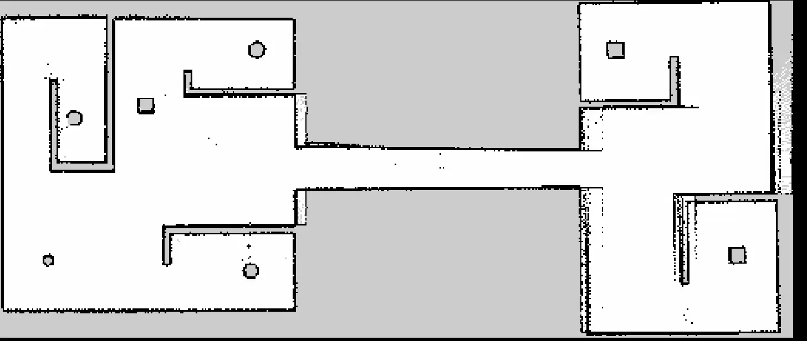
可以看出整体结构没啥问题，但是建图细节存在偏差首先尝试定位问题，进行了多次重复试验(使用不同的移动策略)比如过一次连廊，过两次连廊，与障碍物撞击，绕着障碍物旋转等多种策略 (这个地方真的花费了很多时间才定位出问题，一直到最后也只能完成优化） (结论:对于复杂房间建图，已有的数据不充足，要是能避免或者通过其他方式减弱机器人打滑，撞击导致的位姿漂移能都完成更好的建图)
发现没有碰撞或者较少碰撞的机器人建图效果更好，少通过连廊的建图效果更好。
minimum_angle_penalty: 0.9 → 1.1、minimum_distance_penalty: 0.5 → 0.8 首先简单理解 slam 建图原理，建图过程中会通过一个扫描匹配器估算机器人的位姿，他会给出一些列候选位姿，这上面两个参数就是来约束这个问题的。我适当放大这两个参数以实现能够更加精确的地图构建
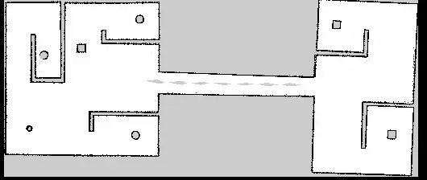
最终结果，地图细节更加清晰了，但是地图出现了整体的倾斜，约 2 度左右，这个目前没有发现解决办法接近两分钟的自主探索 1：实现了面临墙角自动回退 2：面临障碍旋转找路 3：异常(转向失败(转向超过设定时间)，卡死，前方 180 度处均无出路)进行倒退，并且向空旷处转向的操作 4：自主探索房间 接下来记录设计流程与思路
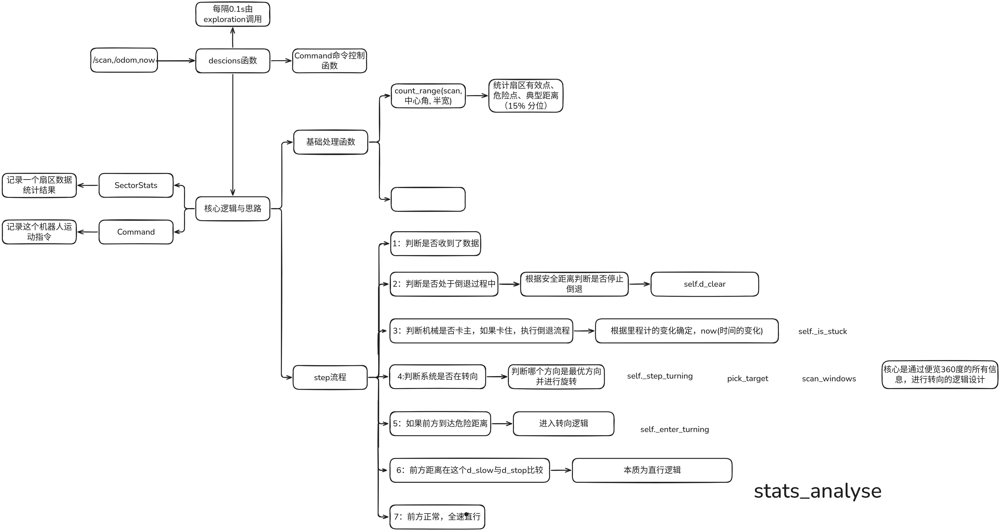
首先收集基础信息，包括但不限于话题消息传递类型，/scan 数据具体内容，详情见 数据分析与记录.md 文件中的记录，此处只列举一部分
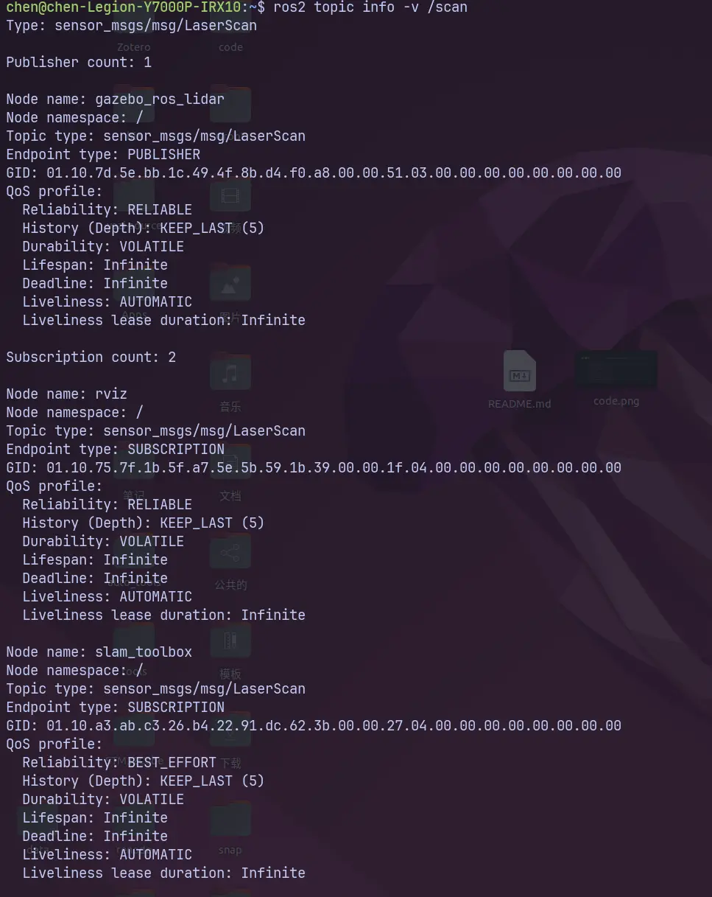
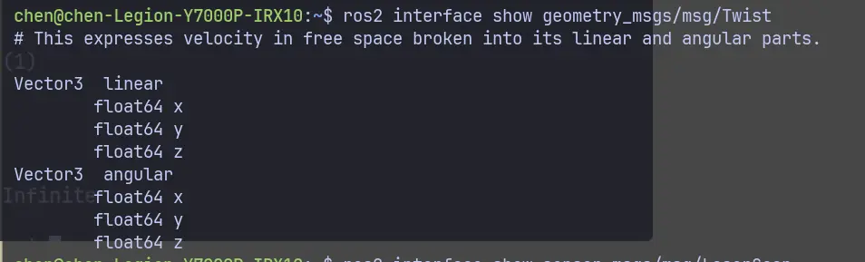
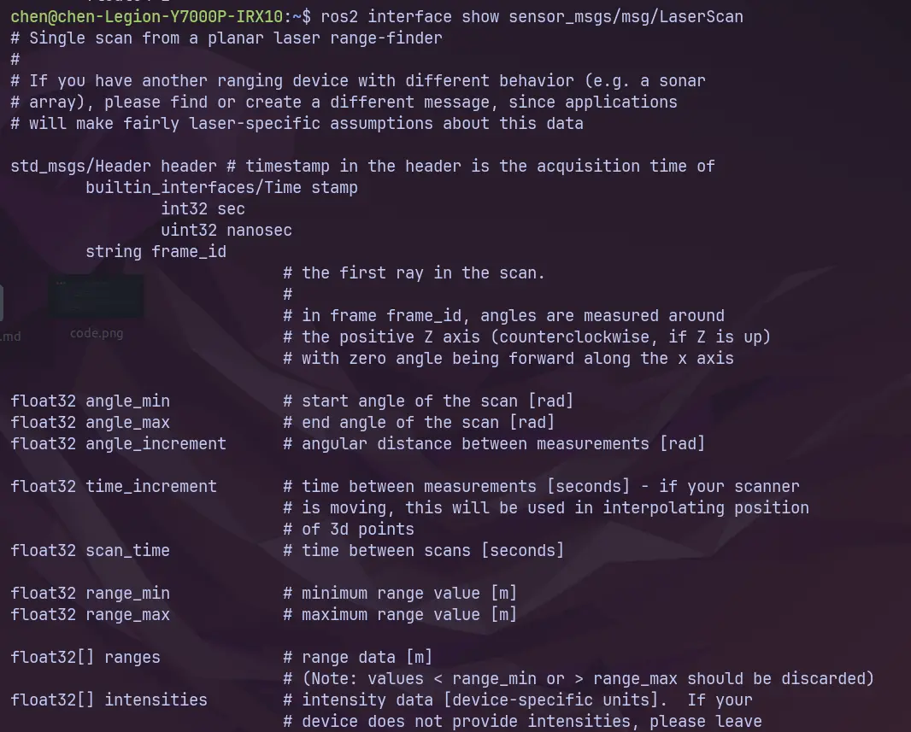
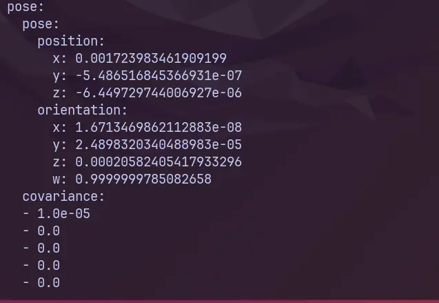
初始状态位姿，向左旋转 90 度位姿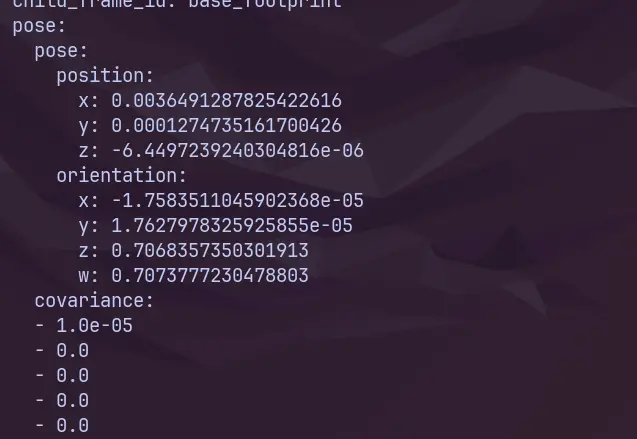
向右转动 90 度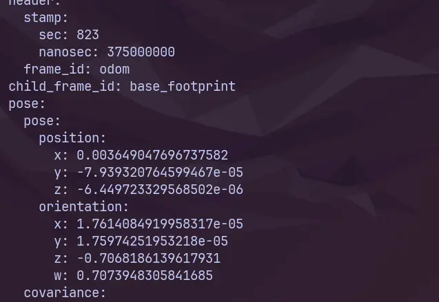
通过这一组信息，可以发现这个激光雷达记录的角度范围为 ( − π, π) 这个区间，并且这个距离合法采集的范围在 (0.12，3.5) 这个区间内这个角度总共被切分为许多个小扇形，一份夹角为 0.01750189 rad,换算约 1°，故认为这个总共被分解为 360 个小区间进行检测。 那么正前方的这个 ranges 应该为180 的均值，正左方为 270 索引，正右方位这个 90 索引。
最初的想法是写一个 count_range(起始角度, 终止角度)，对一段扇区输出三个量：
| 输出 | 用途 |
|---|---|
| 有效点个数 | 判断这段是否“有东西” |
| 危险点个数 | 判断有多少点已经进入危险距离 |
| 15% 分位数距离 | 用分位数而不是最小值，避免单个离群点把开阔判成危险 |
据此划分四种情境：
| 情境 | 处理 |
|---|---|
| 四面空旷 | 随机探索 |
| 一面有障碍 | 转向避开 |
| 两面有障碍 | 转向避开 |
| 三面近距离 | 后退 |
配一个 desicion_route 函数输出 Command(v, w)，另有 scan_cells 做网格化统计，订阅 /odom 判断是否到达目标点。默认直行；遇到情况三优先左转，左侧不安全再右转。
这一步埋下了两个隐患：判据只有“距离”一个维度；方向选择是硬编码的左右优先。
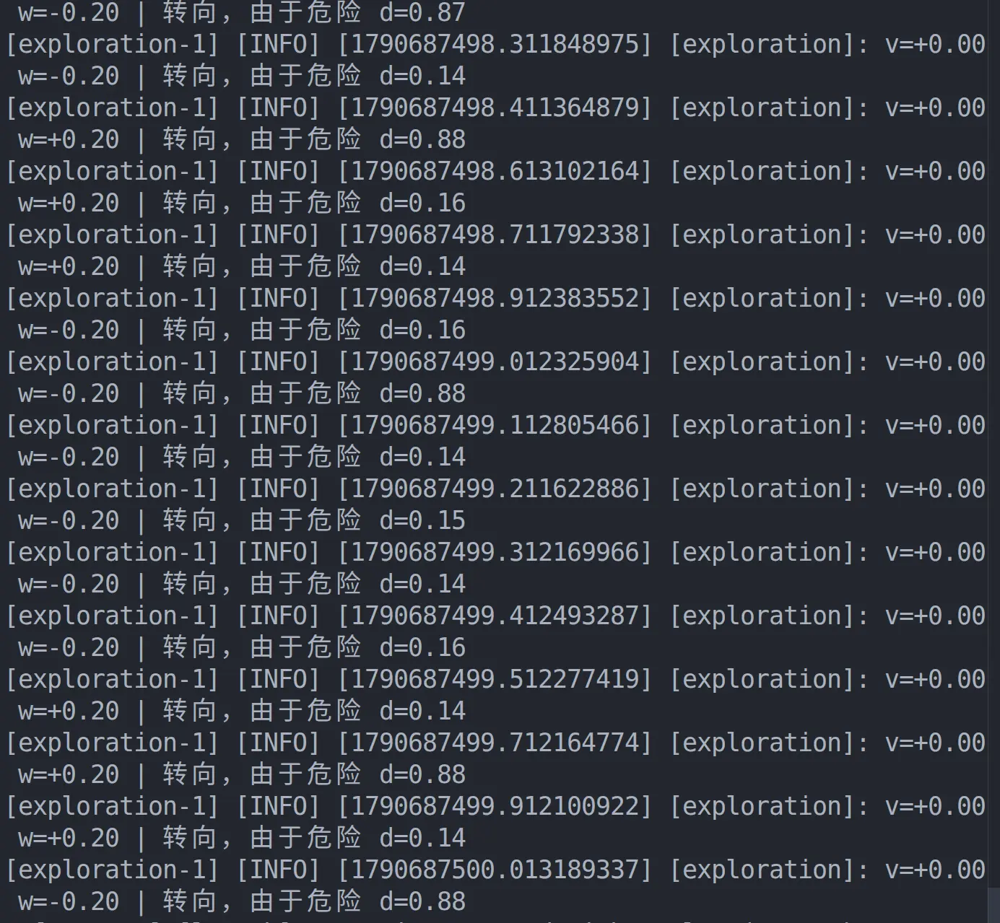
第一次测试，参数设置有问题，导致各个方向都判定为危险。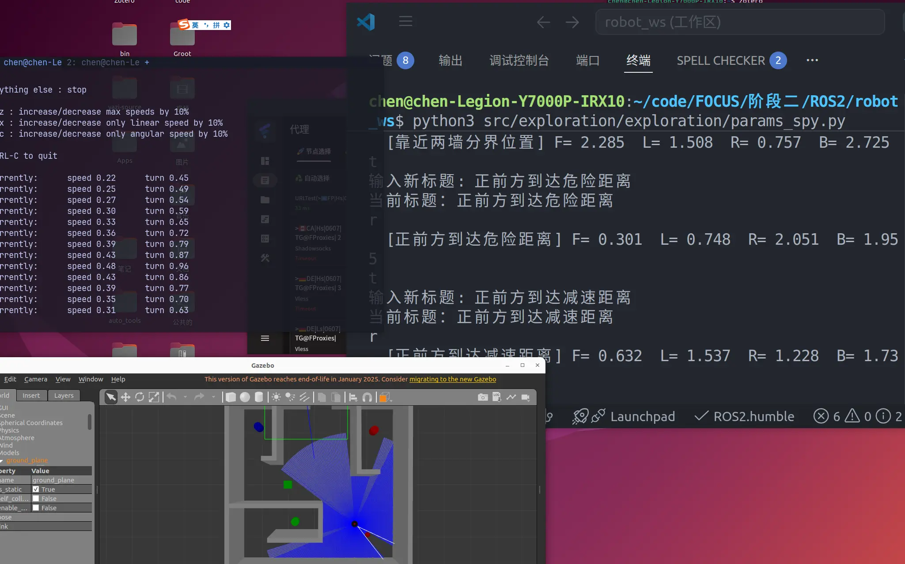
用键盘移动机器人，配合一个 Python 脚本采集各种情况的数据，方便反推参数阈值。 采集脚本src/exploration/exploration/params_spy.py 采集到的数据data/cell_detail.csv **** 修正前： 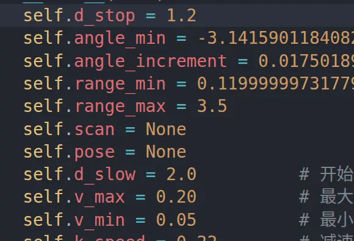
修正后重新测试：
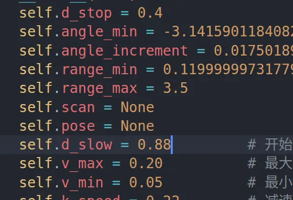
后来发现有一次“不知道啥情况最后卡住”，排查下来是忘记重新构建（colcon build）——属于流程问题，不是算法问题。重新构建后成功进入连廊，可以较为稳定地经过狭窄连廊。
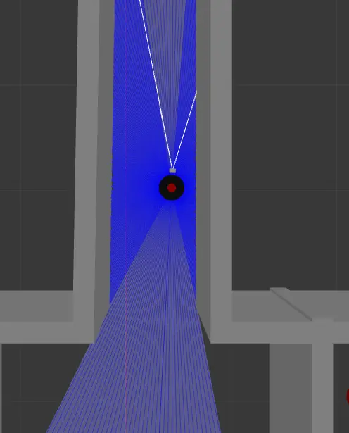
（含第一次卡死现象）
进入连廊之后，最紧要的问题变成如何探索房间。原来的策略是“优先直行”，但这样很多时候会错过左右侧的开口。
整理多次试验后发现的不足：
结果就是：自主探索会忽略进入小房间的那些微小空缺。 具体描述两个问题： 问题一（本质是信息不足） 有一段墙面有一个缺口，机器人沿着墙面直行，在墙面尽头遇到另一堵墙，减速。这个时候左侧是一个小房间，右侧是原本的空间。但机器人的微小倾角可能导致左侧距离远于右侧——这是一个概率性问题，也就是只通过这个时刻的数据无法判断是左行还是右行，所以策略必须能面对这种情况。
问题二（本质是无状态） 面对一个完整墙面时，机器人会反复摆头。猜测是由于转向操作改变了机器人状态，导致反复重复判断，最终卡死。这个地方最好留出一定的余量，方便进行运动控制。 初步的解决方向：
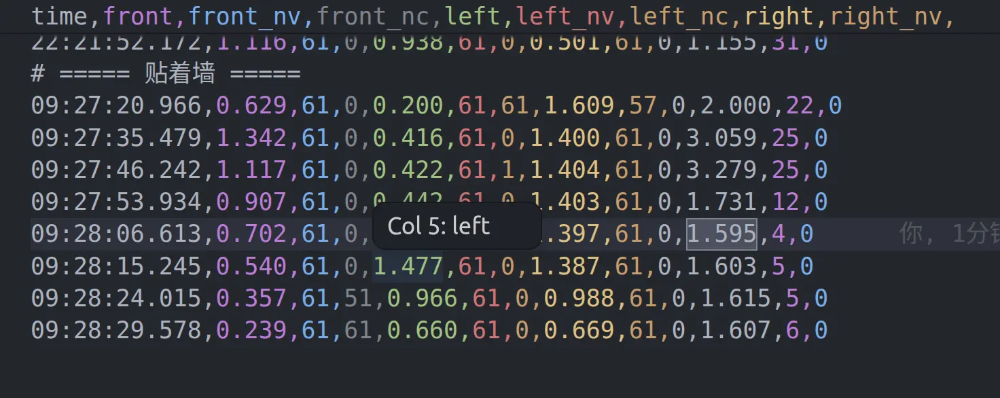
贴着墙走记录数据，发现：前方足够靠近墙时，左右侧距离都会减小；而遇到空缺时，左侧距离会产生一个跳变，从 0.4 跳到 1.4。认为这个数据可以用来判断空缺。
这个地方需要存储历史信息，且最好保留最新的一组信息，那么很容易想到引入一个队列，先进先出。
经过反复思考，决定引入这个新策略：
当前方进入减速距离后，左右扫描，如果有一个方向出现跳变，优先走跳变方向；这个旋转一直旋转到前方到达一个安全阈值为止，这个值最好略大于减速距离。
但出现了新的问题：
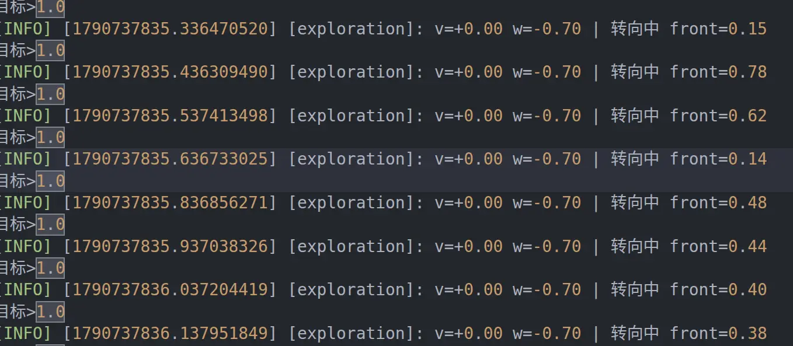
这一步的教训：跳变检测是“事件触发”式的，它只在检测到变化的那一刻做决定；而机器人需要的是“当前哪个方向最好”的持续判断。事件式方案天生对时序敏感，帧率抖动、转向中途都会让它误判。
继续测下去，暴露的问题越来越多：
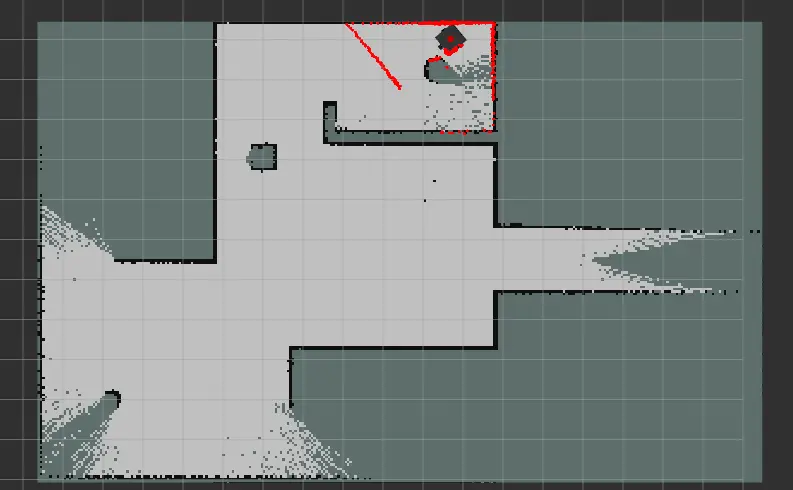
（这一张是建图的时候被小房间卡死的记录） - 频繁碰撞 - 目前建图的问题在于只要进入小房间，就有较大可能被卡死，无法正常出来 - 面对障碍物时本来可以避开，结果一下转过头了，又从原路径返回 - 回退过程中没有检测后方障碍物，导致发生撞击，后续转向受到严重影响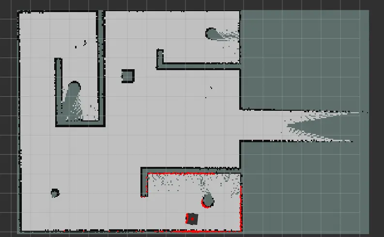
（这一个是手动控制离开小房间后进行建图的结果） 阶段性总结成三条：改进方向的设想：
所以思路是，添加一个函数 scan_windows：扫描前方 180 度，哪个方向有最远的空缺。进而选择出最优的方向，而倒退交给前方 180 度没有任何办法前进的情况
总而言之，目前思考出来的一个改进思路就是：不从局部的左右出发，而采纳整体信息，每次卡死选择最优路径进行行走，而非只是局部的信息。
这一句话是整个设计的转折。 1. 方向决策从“左右二选一”变成“全向打分取最优” 2. 卡死判定从“局部特征”变成“全局状态” 3. 转向必须有状态（锁定目标角、转到位才停）
整理思路，决定只修改转向部分逻辑，对这个地方进行重构，主要是卡死机制。后面更改了设计逻辑，采用各个方向。但由于进入和退出用了不同策略，会出现“退出转向时其实还没有脱离障碍物限制”的情况，目前是通过 odom 配合倒退机制进行操作。
但是这个往往无法正常退出房间。只能进行一个策略分类：通过将场景分为大房间和小房间两种状态——大房间内不存在 inf 或者间距极大的点，小房间中各个方向均能采集到信息，所以可以根据这个特征进行分析、判断。
目前暂时仍然无法解决。
1：无法自主退出小房间、无法有目的性地向未探索区域前进。 2：参数这个 d_clear 还需要调整，目前无法进行长连廊的探索
我后续在倒退环节补入了一个转向分量（退的时候带一点角速度，往开阔的一侧偏），修掉了“直着退、朝向不变、再前进又对着同一个墙角”的死循环。这算是对“进小房间出不来”的一个局部缓解，不是根治——根因仍然是缺一个“记住已探索区域 / 判断房间类型”的全局机制。
这个部分花了相当多时间，反复尝试思路，反复修改，进行代码决策逻辑回退 最大的收获有三个： 一是学会了通过数据采集函数，采集到我感兴趣的数据，然后根据数据进行参数的决策思路，这个思路让我避免拍脑袋决定数据的错误研究方法。 二是这个状态机的引入，不同状态下进行不同决策，显著提高了我的系统对于复杂环境的应对能力 三是从简单的局部信息，跳到了对于环形区域的选择，讲方向选择从离散变为连续，提高了最优化方向选择的能力
测试描述： 首先是初始化的时候，他自己随机选中了一个物块，然后，然后根据这个代码里面的一个判断，进行一个靠近达到 arrive 的一个阶段。在此之后，在我对他进行一个外界的扰动，比如说对它的方向进行一个轻微扰动，我们发现它可以很快地重新固定到这个物块上。如果对它进行一个大的扰动的话，它会按照我们设计的逻辑进行逆时针旋转的扫描，从而锁定到新的物块上去，并给出这个物块的颜色。
首先让 AI 完成一个颜色采集 Python 脚本的设计 src/camera_detect/camera_detect/image_collect.py 然后采集的数据放在 data/clicks.csv 从而为后续参数设计提供思路
首先将图像进行采集,然后一句颜色设置掩码，采集轮廓，计算大小，取最大的那一个，然后进行朝向运动。